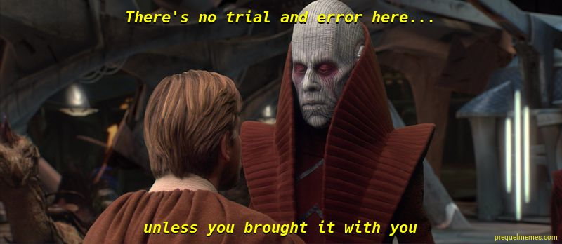

Counterplay Infinity is a sort of a bare-bones (no movement, no graphics) browser-based fighting game I made a few months ago. As of April 1 I decided to refurbish it and put it up on my website. I've since become disillusioned with the game. I had a critical misunderstanding of depth when I made it. Still, I learned a valuable lesson about game design from it (that fairness isn't the only thing that matters) and if you want to check it out you can play it here. It even has a bot (though you can tell and it's easily exploitable once you know its weakness). In fact, the game's source code is available here.
The game's name came from my frustration with mainstream action/fighting games. Most of these games that I've played (though I admit I haven't played that many) have some counterplay option to every or almost every attack that not only guarantees you won't take damage but guarantees the opponent will take damage. For example, in Dark Souls PvP if you attack and someone parries you it sucks to be you. No amount of skill can save you from being riposted after you attack. In Dragon Ball FighterZ, almost all of the cool Ki-costing attacks when used in the neutral game can be dodged and even punished on reaction by the 'vanish' move. In DBFZ, I know there are ways to attack safely, but it's a little disappointing that seemingly all the "power" attacks are suicidal unless you're already landing a combo. In Dark Souls, I'm not even sure if there's a way to attack safely against someone who just waits to parry you, but I've seen that very skilled PvP players (one whom I've seen take on four others at once in Dark Souls 3) frequently attack knowing they can be parried, because, oh well it probably won't happen. In a word, there's no counterplay to the counterplay.
In Counterplay Infinity, attacking is the optimal strategy and will never result in you getting punished without a chance to contest it. Detailed rules are on the game page. Oh, that's another thing I wanted to mention: fuck games that don't tell you the rules. Counterplay Infinity is not one of those games. If you read the half-page of rules, you'll never die because you didn't know that you were supposed to block the giant bull charging at you, but you had to dodge the normal human guy because his attacks penetrate your blocks (looking at you, Sekiro).
